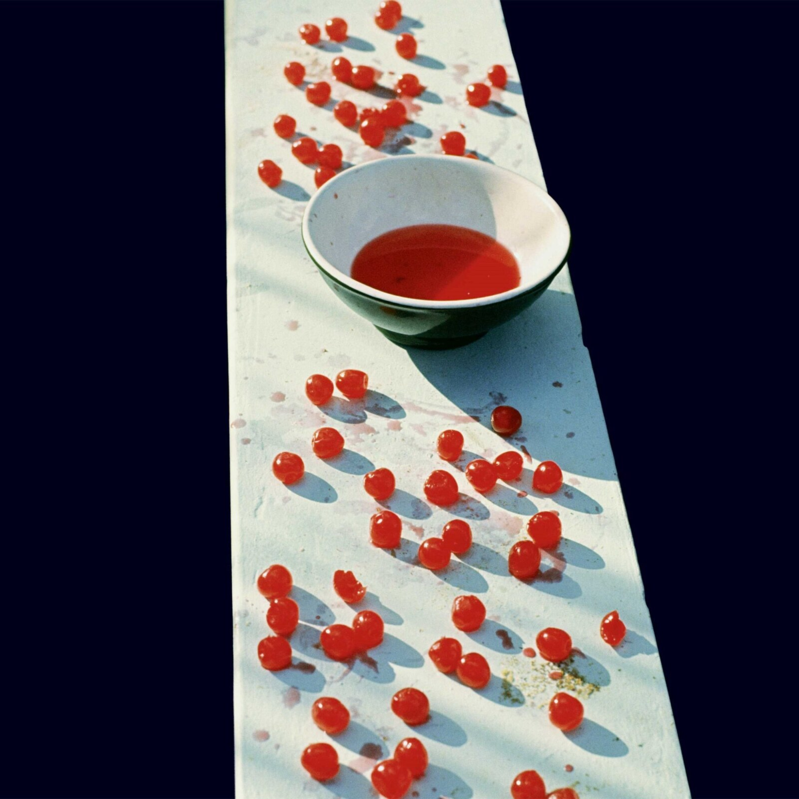

Every Night

Versions
Performers:
Paul McCartney -
Track 1 - Vocals, Acoustic Guitar
Track 2 - Tom-tom & Cymbal
Track 3 - Electric Guitar
Track 4 - Bass
Recording:
23–30 December 1969
Mixing:
22 February 1970
Locations:
Cavendish Avenue, London (Recording)
Abbey Road Studios, London (Mixing)
Engineers:
Paul McCartney (Recording)
Phil McDonald (Mixing)
Producer:
Paul McCartney
Release:
United Kingdom: 17 April 1970
United States: 20 April 1970
Performers:
Paul McCartney - Vocals, Acoustic Guitar
Linda Eastman/McCartney - Percussion
Robbie McIntosh - Acoustic Guitar
Hamish Stuart - Acoustic Bass, Vocal Harmonies
Paul Wickens - Piano
Blair Cunningham - Drums
Recording:
25 January 1991
Location:
Limehouse Television Studios, London (Recording)
Engineers:
Geoff Emerick (Recording & Mixing)
Eddie Klein, Gary Stewart, Peter Craigie (Assistant)
Gary Bradshaw (Monitor)
Producer:
Paul McCartney
Release:
United Kingdon: 20 May 1991
United States: 4 June 1991
Broadcast Date:
25 May 2001
"Every Night" had been buzzing around McCartney's head since at least 1968, although in a vague form. On the snippet heard during two sessions of Get Back (21 and 24 January 1969) there's only a hint of the melody and both bridge and refrain are missing: the song was completed on the island of Corfu, where Paul spent a vacation between May and June 1969. Paul: "This came from the first two lines which I've had for a few years. They were added to in Greece [Benitses] on holiday."
Perhaps sensing its potential, McCartney chose to record the track relying on the proper technical conditions at Abbey Road, even though he was quite hesitant at the final form he would give it. In fact, on 22 February 1970, he recorded two different versions, and to date the first, taped with an electric guitar part, remains unreleased. Paul: "When I played the McCartney album to Ringo, he said that he preferred my original solo version, when I had first sung it to him."
In the end, the song was arranged with bright acoustic guitars and a powerful rhythm section very high in the mix. The eight tracks were filled with vocals (tracks 1 and 7), acoustic guitar (tracks 2, 5 and 6), drums (track 3) and bass (track 4), while an electric guitar part on track 8 was not used. Stylistically, "Every Night" is a melodic blues in E, and the wordless refrain, sung in a high register, closely resembles the opening line of The Beatles' "You Never Give Me Your Money".
And precisely this blues flavour would make this track much appreciated by Afro-American musicians, such as Odetta (album Odetta Sings, 1970), 5th Dimension (album Love's Lines, Angles and Rhymes, 1971), The Drifters (single, 1972) and Richie Havens, who would include a cover of it in his album Connections (1980). However, British singer Phoebe Snow was first in bringing it to success: in 1979 her version reached no. 37 in the UK charts.
Over the years, "Every Night" has been performed with different arrangements: a slower and rocking version on the Wings' British Tour 1979, a performance with an a cappella section on Unplugged (also performed on the 1991 Secret Gigs Tour and on the 1993 New World Tour) and finally an acoustic solo rendition by McCartney, both on his Drivin' Tour 2002-03 and in some dates on the Up & Coming Tour 2010. In 1994, answering a question in Club Sandwich, the magazine of his official Fun Club from 1977 to 1997, as to whether there was any song that he would have liked to re-record, McCartney chose "Every Night".